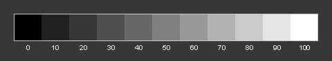

One of the best tools with littlecms is the profile construction tools, which are a separate download from www.littlecms.com. There are five separate tools included in the package:
Here, we are going to focus on creation a monitor profile with qtmonitorprofiler. Without, some sort of accurate monitor profiler, you will find it difficult to obtain good results from the other tools. Before starting, you need to find if possible, your monitor manual or a spec sheet from your vendor's website. In addition, you might wish to locate the factory ICC profile, which we will use for comparison purposes later on.
It is simple to untar and simply type make in the source directory. This will build all five tools and leave the executables in the root source directory. If you are fussy like me, you can go in an hand edit the make files to taste. There is an option to compile this as a KDE application, but if KDE is in a non standard location, it will not compile in this manner.
First steps:
Explanation: This step, helps to get your monitor to display with a closer match to the standards which are used in color measurement. Typically, most monitors are set at the factory to 9300k, which is too "cold" or bluish to depict colors in a balanced manner. After changing your monitor temperature to 6500k, you might think it has a yellowish cast, but walk away for a few minutes and return. Your eyes will adjust.
Next, set monitor contrast to nearly 100%. Then you want to use the brightness controls to adjust the brightness, so you can see the following, so that each of the shades of gray is distinct.
|  |
The first tab will bring up the panel. Check: "I want build a coarse monitor profile."
| src="images/monprof1.png" title="The first qtmeasurement panel" alt="The first qtmeasurement panel"> |
Then switch to one the below:
| src="images/monprof2.png" title="Setting gamma and monitor white space with qtmonitorprofiler." alt="Setting gamma and monitor white space with qtmonitorprofiler."> |
Now that we have switched the monitor temperature to 6500K, set the same in the white point drop down list. Then, unless you know there is a specific reason to over ride the default sRGB, leave this as is. You do not need to name the profile as indicated just yet.
Next adjust the slider to adjust the gamma so the two shades of gray blend together with the closest color match possible. Most IBM compatible PC's have a gamma setting between 2.1 and 2.4. Macs are generally 1.8. This the reason it is common to find images on edited on a PC looking darker on a Mac. If you monitor is older, it might have a slight color cast and you can try adjusting the individual color channel settings. Don't overdo it. Slight subtle adjustments are better.
Next go to the Profile Identification tab. Add some additional info as shown below:
| src="images/monprof4.png" title="adding descriptive info for your icm profile" alt="adding descriptive info for your icm profile"> |
Next, go back to the main page, name your profile. You might want to name the profile something like: /home/peter/d650023.icm This gives you a quick reference to what the profile means. In this case, d= daylight 6500=the monitor is set to 6500k 23=gamma setting of 2.3. If you have colored walls or large windows, you might want to create two monitor profiles: One for daylight and a second one, when you have indoor lighting on during the night. The difference is subtle, but is noticeable. for this preliminary profile, you can leave the
Parameters and Tweaking tab alone. The default is set to the icc default specs.
The last step is to click go and the profiler will create the icm file. This takes but a second or two. Now you can close the profiler for now.
Then, copy the profile to the Scribus profiles directory from a console as root: # cp ./d650023.icm /usr/local/lib/scribus/profiles/ This is the default
directory, your might be different if you installed from a package.
Now Scribus can use this profile for more accurately managing screen previews. Start or restart Scribus and go Settings > Color Management. Enable color management and select the monitor profile as below:
| src="images/scribuscms1.png" title="Scribus CMS settings for the monitor profile" alt="Scribus CMS settings for the monitor profile"> |
By setting this monitor profile to be the default, you have enhanced the accuracy of your screen previews. You can selectively enable the gamut checking in your previews, but this is not quite perfected in littlecms. This is not a weakness is littlecms nor Scribus, but a limitation of the current icc specs. When enabling this consider the preview a warning - not definitive. The true test is what actually will print.
You can also use this profile to enhance the previews in Corel Photopaint or other image editing programs like Photoshop which are color management savvy. Monitor colors and brightness vary over time, so re-profiling at least once every couple of months is a good idea. In professional settings, sometimes they are re-profiled every week
Note 30:10:2003: The latest beta profiler for littlecms adds new features, including support for profiling digital cameras and additional enhancements. However, it is a Windows only program. Fortunately, it includes the updated lcms 1.11 and it installs and runs fine under any recent version of Wine.